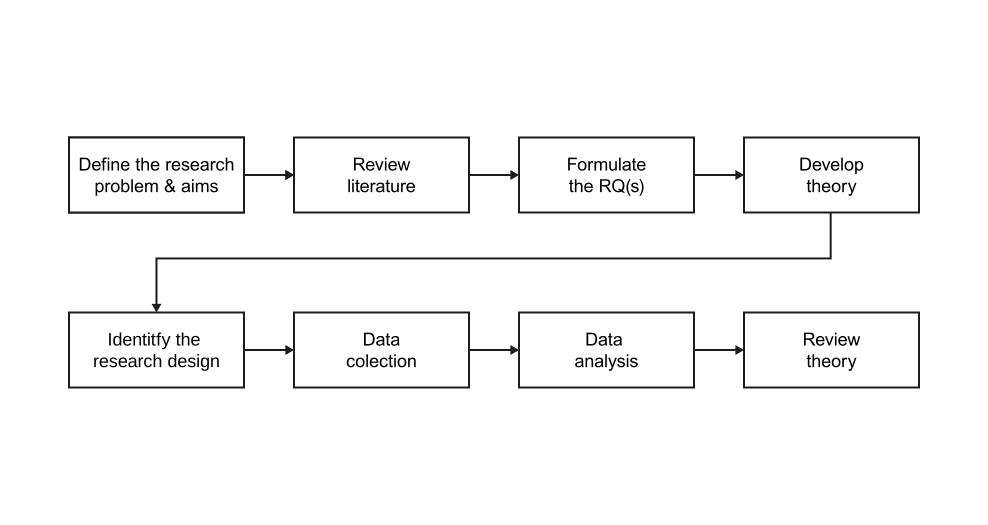
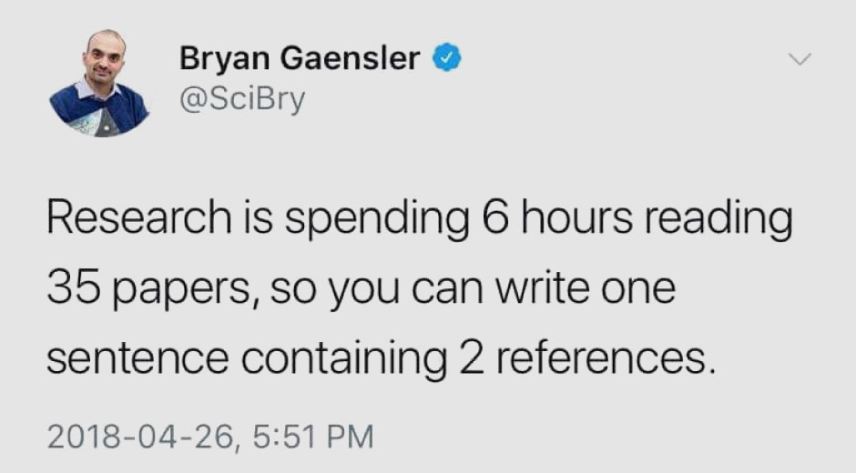
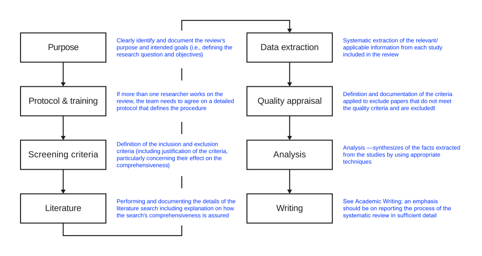

Process
Some thoughts on structuring research projects
Recap
Science
Science is both a product (the body of knowledge) and a process (doing scientific research).
- It is exciting—discovery of new
- It is ongoing—never finished
Scientific knowledge
All scientific knowledge is a set of time-bound conjectures.
The body of knowledge—the product of science—describes the current accumulation of what we know, what we can measure, what we claim to explain (e.g., theory, evidence, methods).
- It is at the heart of science—starting point and object.
- It is available in the scientific community in the form of paper, articles and books.
- It is constantly evolving—it moves and grows every day.
Theory
Good Theory =
Clear Concepts + Logical Arguments + Testable Predictions
- Theory helps us move from description to explanation — organizing empirical facts to understand not just “what” happens, but “why” and “how”;
- enables generalization — bridging from specific observations to broader principles that guide future research and practice; and
- drives cumulative knowledge — building on and connecting prior findings to advance our field systematically
Research process
Generic process

The process as depicted in Figure 3 looks very straight-forward. However, in reality the “construction” process of research is messy and characterized by trial and error, failure, risk-taking and serendipity, so it requires perseverance through many iterations of inductive, deductive and abductive reasoning, ideas and trials, testing and retesting. It took Thomas Edison 2,000 trials before he was successful with his first innovation. Research is, without exaggeration, a challenging task (Recker, 2021).
Role of literature
On giants
If I have seen further, it is by standing on the shoulders of giants. Sir Isaac Newton, English scientist (1642 -1726)
The phrase “standing on the shoulders of giants” is a metaphor that means using the insights of the great thinkers (i.e., the body of knowledge) to make intellectual progress. (i.e., to contribute to the body of knowledge).
Read before you write

A common piece of advice is “you should read before you write” (Recker, 2021, p. 52). There is a lot of truth to this advice. One of the most important tasks in your efforts to contribute to knowledge with your research is to acquire knowledge. You need to know the current body of knowledge in your field (which is codified in the literature) before you can even think about how to create new knowledge.
Types of knowledge
You need to acquire at least three types of knowledge before yo can even start your research (Recker, 2021)—knowledge about:
the domain and topic, relevant theories and available evidence & relevant research methods
- the domain and topic of interest that relate to your chosen phenomena;
- relevant theories and available evidence that help you frame questions and phenomena, and
- relevant research methods that you can apply to develop new knowledge, build innovative artefacts, or articulate new questions.
Doing research demands that you spend a significant amount of time and effort to acquire and critically appraise this cumulative knowledge base, constantly, repeatedly, continuously (Recker, 2021). A firm understanding of the body of knowledge is essential to many of the decisions in early stages of your research. Particularly, the literature provides information about:
- the extend, type, and nature of potential research problems;
- gaps of knowledge about a particular phenomenon or question;
- the extent to which current theories provide explanations or not;
- which theories can be used to frame the investigation; and
- strategies and methodologies used to research the phenomenon or similar phenomena.
Read-interpret-write
When consuming scientific literature, it’s not always necessary or efficient to read every sentence from start to finish.
You can apply the read-interpret-write strategy to keep focused and make the most of your reading (adapted from read-think-interpret strategy in Recker, 2021).
- Read — before diving into the details, skim the title, abstract, introduction, headings, subheadings, and conclusion; then identify key sections that contribute to your objectives and read those piece by piece
- Interpret — think about the piece’s relevance for your research and evaluate whether there are useful ideas, theories, concept, methods, or findings you should investigate in more depth
- Write — Keep a (digital) notebook where you note down key takeaways, questions, and reflections.
While reading, interpreting and writing, always keep your research goals in mind.
The following questions can guide you in the read-interpret-write process (Recker, 2021):
- What is the central contribution of the material in terms of contemporary practice in your field of research?
- How does it relate to other articles and practices?
- Does the reading represent a theoretical or methodological perspective that might be useful in examining the phenomena that interest you? And why is this the case, or why not?
- How might it inform your own thinking about the field?
- How do you think the reading influenced the state of knowledge in the field at the time it was published?
Additional strategies
- Use highlighting or annotation: As you read, use highlighting, underlining, or digital annotation tools to mark key points, important concepts, and relevant citations. This can help you quickly locate and review important information later. Read Strategically: If you’re reading a longer paper, consider reading strategically by reading the first and last sentence of each paragraph. This can give you a sense of the main ideas without getting bogged down in every detail.
- Follow citations: If a paper references other works that are crucial to your research, consider following those citations to gather a broader understanding of the context and related resrks that are crucial to your research, consider following those citations to gather a broader understanding of the context and related research.
- Take breaks: Reading complex material for extended periods can lead to reduced comprehension. Take short breaks to maintain focus and prevent fatigue.
- Utilize summaries: In addition to reading full papers, consider using summaries, reviews, or annotated bibliographies to get an overview of key concepts and findings before deciding whether to delve into the complete paper.
Where to find literature
Build on the shoulder of giants—your research should build upon high quality readings, which are usually found in leading journals and conferences (especially recent topics).
- Journal and Conference Rankings for Information Systems/Management
VHB JourQual 3, AIS Senior Scholars’ List of Premier Journals, or ABS Academic Journal Quality Guide, or Harzing List - Also look in related fields (e.g., in management or psychology), particularly for theory literature
E.g., scan recent publications in the journal/conferences of the Academy of Management (AOM)
Initially, scan leading journal/conference; start with the most recent articles.
Later, adopt a structured approach, e.g., run structured queries against databases such as the the AIS eLibrary or Web of Science.
Forward and background search
Look beyond a read to avoid overlooking relevant parts of the literature.
- Backward search—look at the references of the paper you are reading in order to uncover important/seminal articles.
- Forward search—use a database (e.g., Google Scholar) to identify articles citing the paper you are currently reading. This helps to uncover more recent articles that build upon the topic you are engaging with.
Summaries
You might not be the first, so look for and utilize structured literature reviews:
They contribute to the overall understanding of a subject area and highlight areas for your research.
Literature review articles are available to many topics/problem domains. Those papers examine and synthesize existing research on a specific topic to provide a clear and well-organized overview of the literature while identifying key themes, trends, gaps, and debates. They are an excellent starting point for gaining a comprehensive understanding of the current state of knowledge within a particular field or subject area.
You can identify literature review by running a query against online databases (e.g., Google Scholar, AIS eLibrary) with ‘literature review’ or ‘literature analysis’ and your topic as keywords
Excursus: SLR
Definition
A systematic, explicit, and reproducible method for identifying, evaluating, and synthesizing the existing body of completed and recorded work produced by researchers, scholars, and practitioners. Fink (2019, p. 17)
Types
There are three different types of literature reviews (Okoli, 2015):
- Review for the background section of a paper that gives the theoretical foundations and context of a research question and helps to bring the question into focus
- Review for a graduate thesis (”thesis literature review”)
- Standalone literature review that is a journal-length paper that reviews the literature in a field without the author’s collecting or analyzing any primary data (“systematic literature review”, SLR)
The focus here is on the last one, which is distinguished by its scope and rigor.
Examples: A review of culture in information systems research by Leidner & Kayworth (2006); rigor in information systems positivist case research by Dubé & Paré (2003); digital innovation by Hund et al. (2021)
Purpose
A systematic literature review is usually conducted to
- analyze the progress of a specific research stream,
- make recommendations for future research,
- review the application of one theoretical model in the IS literature,
- review the application of one methodological approach in the IS literature,
- to develop a model or framework, or
- to answer a specific research question that is not related to the above goals
Process

Drafting the protocol and training of the team
A protocol is a plan that describes the conduct of a proposed systematic literature review and serves as the roadmap towards the answer to the research question.
At least, the protocol defines
- the search locations and the search procedure (e.g., the keywords),
- the screens each paper will need to pass through to be considered for inclusion,
- the analysis techniques applied including rules about when to make notes/code, and
- how inter-reviewer reliability is established.
The protocol needs to be discussed in the team and all reviewers need to be trained.
Defining the screening criteria
The goal of the practical screen is to reduce the number of studies to be analyzed to a number that can be practically handled by the reviewers. Possible criteria are
- Content (topics or variables) has bearing to the research question
- Publication language can be read by the team
- Limitation to a select set of high-quality journals/conferences
- The review might consider only those studies conducted in certain settings
- Restriction to works that study subjects of a certain gender, work situation
- Focus on studies in certain date ranges
Searching for literature
It is most efficient to use open access databases (such as Google Scholar and the Directory of Open Access Journals) and specific subject databases (such as ProQuest, Scopus, EBSCO, IEEE Xplore and the ACM Digital Library) to search for literature.
Search queries that reflect the defined search and inclusion criteria need to be defined.
The search should be supplemented further by backward and forward search.
Extracting data
Systematic information extraction from each paper to elicit the raw material for the synthesis step. The type of data to extract is based on the research question established during the protocol phase.
Qualitative coding techniques and related software packages can be used to extract data (e.g., MaxQDA or NVivo)
Recommendation: Video tutorial „Using MAXQDA for a literature review“
Further reads: Fink (2019) and Keele et al. (2007).
| Measurable Concepts | Measurement |
| Definitions | |
| Synonyms | |
| Characteristics, dimensions, and unit of analysis | |
| Relationships and their explanations | Concept pair for each relationship |
| Explanation provided for relationship | |
| Relationship details: practical implications and strength of evidence | |
| Contextual factors | Who: subjects |
| Where: locations and environment | |
| When: temporal factors | |
| Research design | Empirical or conceptual |
| Methodological details | |
| General | Practical implications |
| Questions for further research |
Appraising quality
Once all potentially eligible papers have been collected, the papers should be ore closely examined to evaluate their quality. To assess a paper’s qualitative merit stricter criteria (or applying scoring on the inclusion criteria) should be applied (and reported).
Criteria could be:
- Journal ranking (use e.g., www.journal-rankings.com)
- Usage of randomized controls,
- degree of e.g., content and face validity, or
- criteria related to the research question
Only those that pass the threshold should be considered.
Synthesizing studies
At this stage, the reviewers aggregate, discuss, organized, and compare to gain a complete, polished synthesis of information using techniques like meta-analysis, content analysis, qualitative comparative analysis, grounded theory.
Transition from an author- to a concept-centric focus including e.g.,
- Concept-centric summary of existing literature
- New propositions that arise from insights of synthesis
- Comprehensive presentation of theory (old and new propositions)
- Unanswered research questions (old and new)
Research questions
I believe that the choice of research problem –choosing the phenomena we wish to explain or predict –is the most important decision we make as a researcher. We can learn research method. Albeit with greater difficulty, we can also learn theory-building skills. With some tutoring and experience, we can also learn to carve out large numbers of problems that we might research. Unfortunately, teasing out deep, substantive research problems is another matter. It remains a dark art. Ron Weber, former EIC MIS Quarterly (2003)
We will discuss some strategies on topic choice in the Academic Writing course.
What is it?
Asking a research question is the logical, necessary, and inevitable conclusion to a set of arguments (Recker, 2021).
These arguments stress that there is
- an important problem domain with
- an important phenomenon that deserves attention and that relates to
- an important problem with the available knowledge about this type of phenomenon.
Motivating a research questions
The gap is usually the argument that something hasn’t been done yet.
The hook is a strategy to find a problem that someone cares about.
A bad gap is “nobody has studied …”, a good gap indicates a problem.
- A contradiction in the literature (e.g., inconsistent observations or competing theoretical explanations)
- Missing account for specific, important phenomena, understandings, or contexts (and why)
- A puzzle for practice that is important but not addressed by the literature
- Existing literature may mislead our thinking (i.e., outdated or false assumptions)
Specification
Research questions are typically one of two types (Recker, 2021):
- Type 1
- “What,” “who,” and “where” questions tend to focus on issues we seek to explore or describe because little knowledge exists about them. Example: At the onset of the Covid-19 pandemic, the world realised that there was a new virus. The first step was then to find out everything about it: what it looks like, what it does, what its genetic structure is, where it occurs, who can be infected by it, and so forth.
- Type 2
- “How” and “why” questions are explanatory as they seek to answer questions about the causal mechanisms that are at work in a particular phenomenon. Example: We wanted to find out how the Covid-19 virus infects people so we could devise treatments and vaccinations that hinder the mechanism by which the virus infects people.
Type 2 questions often temporally succeed type 1 questions as it is difficult to explain a phenomenon without first systematically exploring and describing it.
Quality-checks
The research question help you focus the study and give you guidance for how to conduct it.
Recker (2021) proposes following principles to reflect on if a RQ serves these functions well.
- Short: Research questions have to be concise (rule of thumb: one line of text, max. 1.5 lines).
- Feasible: You should have answers to at least following questions: Are you able to observe all concepts you use in the research question? Are adequate subjects of study available? How will you collect the data? How will you analyze the data? Do you have the technical expertise, the time and money?
- Interesting: You are confident that you can maintain an interest in the topic and maintain your own motivation to study it.
- Novel: An answer will confirm or refute previous findings or provide new findings.
- Ethical: Pursuing and answering the question will not violate ethical principles for the conduct of research, and will not put the safety of the investigators or subjects at risk.
- Relevant: Both the question and the future answer(s) are important in the sense that they inform scientific knowledge, industry practice, and future research directions.
In addition, consider the following checks:
- Research questions have to be formulated in a way that they cannot be answered by Yes or No or similar binary results.
- Research can not directly answer practical questions such as “How can I improve X?” To address such practical questions, you need to focus on what you don’t understand about the phenomena you are studying, and investigate what is really going on with these phenomena.
- Research questions should not ask for potentially infinite lists of factors such as “What factors influence…”. Such questions are too vague and thus do not provide the focus needed.
- Do not pack several questions into one sentence. Typical sign for several questions within one sentence are connections with “and” or “or”. Each question has to be presented in a separate sentence and has to be formulated as explicit question with question mark at the end of the sentence.
- Research questions often relate one or more variables to one another and ask for relationships. In the following “y” means the dependent variable (the variable to be explained, improved, influenced,..) and “x” the independent variables (= the variable that are assumed to exert an influence on y). Research questions often look like this: „How is x related to y? What is the role of x for y? Why does x influence y? To which extent does x influence y?
- The expression “To which extent” when used in research questions needs statistical evaluations and measurement in numbers. They typically cannot be answered by qualitative research.
- For empirical work, the research question needs at least two precisely formulated variables. Checkpoints: Does the question contain at least two variables that are formulated in a way that you can imagine that they can be measured? What could be the source of data? Is there access to the data?
- Variables should not express an activity or process because that would require a longitudinal study (= study over time with several measurement periods). This typically exceeds the timeframe of a master’s thesis.
AI Usage
You can use AI as any other tool, as long as you have verified that
- you need to labeled the content taken from the GenAI tools at least in the appendix (“Declaration of AI Usage”),
- the content generated by the above-mentioned GenAI tools and adapted by me is factually correct,
- you are aware that, as the author your work, you are responsible for the information and the statements made in it, and
- your are aware that violating the disclosure of the use of generative AI in your work is a deception and leads to an evaluation with an insufficient grade.
If you are using Generative AI, please consider following frameworks:
- CLEAR framework (Context, Length, Examples, Audience, Role)
- Context (provide background), Length (specify output length), Examples (show desired format), Audience (define who this is for), and Role (tell the AI what perspective to take). Instead of “Write me an introduction to my research paper about social media,” here’s an example using the CLEAR framework for structuring an academic introduction: “You are an master student enrolled in academic writing. Write a 600-word introduction for a research paper on the impact of social media on academic discourse. Use the CARS (Create A Research Space) model with clear moves showing the research territory, niche, and occupation. Base the structure and tone on this example introduction: [insert example introduction]. Focus on establishing the research gap or problem regarding how platforms like Twitter have changed scholarly communication patterns. Write for an audience of peer reviewers at an IS journal.”
- RACE framework (Role, Action, Context, Expectation)
- This framework excels when you need the AI to assume specific academic expertise. For example: “Role: You are a literature review specialist in IS research. Action: Analyze these 15 research papers for methodological gaps. Context: I’m preparing a grant proposal on working memory interventions for ADHD students, and I need to identify unexplored research directions. Expectation: Provide a 400-word analysis highlighting 3 specific methodological gaps with suggested research questions for each.”
- APE framework (Action, Purpose, Expectation)
- This framework works brilliantly for straightforward academic tasks where clarity is paramount. Try this: “Action: Summarize the key findings from this 50-page report. Purpose: To brief my fellow students who need to understand the implications for their research in IS. Expectation: Create a 2-page executive summary with bullet-pointed action items and a timeline for implementation.”
- RISE framework (Role, Input, Steps, Expectation)
- This framework delivers exceptional results in complex, multi-step academic processes. Here’s an example: “Role: You are an experienced journal editor in environmental science. Input: This draft manuscript on microplastic contamination in freshwater systems attached as PDF. Steps: First, evaluate the literature review draft for completeness. Second, assess methodology for rigour. Third, analyze results presentation for clarity. Fourth, review discussion for logical flow. Expectation: Provide specific feedback for each step with concrete suggestions for improvement.”
Additional resources
The information systems discipline also has excellent web resources that are dedicated to the literature about theories and methodologies: